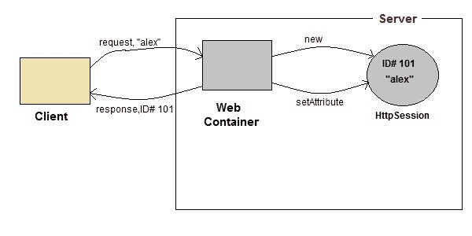
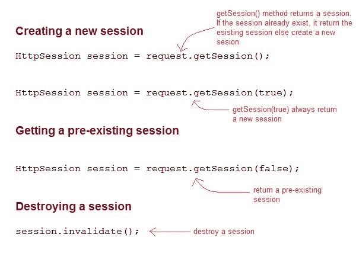

Servlet：什么是HttpSession？
HttpSession 对象用于存储与特定客户端的整个会话。我们可以存储，检索和删除对象的属性。任何 servlet 都可以通过HttpServRequest对象的getSession()方法访问 HttpSession 对象。
servlet:HttpSession 如何工作

- 根据客户端的第一个请求，网络容器生成一个唯一的会话标识，并将其作为响应返回给客户端。这是由 web 容器创建的临时会话。
- 客户端随每个请求发回会话标识。使得 web 容器更容易识别请求来自哪里。
- 网络容器使用该标识，找到与该标识匹配的会话，并将该会话与请求相关联。
Servlet: HttpSession 接口

Servlet HttpSession 的一些重要方法
| 方法 | 描述 |
| 长getCreationTime() | 返回会话创建的时间，以毫秒为单位，自 1970 年 1 月 1 日午夜开始计算。 |
| 弦getId() | 返回包含分配给会话的唯一标识符的字符串。 |
| 长getLastAccessedTime() | 返回客户端上次发送与会话相关联的请求的时间 |
| int getMaxInactiveInterval() | 返回最大时间间隔，以秒为单位。 |
| 作废invalidate() | 破坏会话 |
| 布尔值 isNew() | 如果会话是新的，则返回 true 否则返回 false |
| 作废setMaxInactiveInterval(int interval) | 指定 servlet 容器将使会话无效的时间，以秒为单位。 |
演示 HttpSession 用法的完整示例
下面提到的所有文件都是示例所必需的。
index.html
<form method="post" action="Validate">
User: <input type="text" name="user" /><br/>
Password: <input type="text" name="pass" ><br/>
<input type="submit" value="submit">
</form>
web.xml
<web-app..>
<servlet>
<servlet-name>Validate</servlet-name>
<servlet-class>Validate</servlet-class>
</servlet>
<servlet>
<servlet-name>Welcome</servlet-name>
<servlet-class>Welcome</servlet-class>
</servlet>
<servlet-mapping>
<servlet-name>Validate</servlet-name>
<url-pattern>/Validate</url-pattern>
</servlet-mapping>
<servlet-mapping>
<servlet-name>Welcome</servlet-name>
<url-pattern>/Welcome</url-pattern>
</servlet-mapping>
<welcome-file-list>
<welcome-file>index.html</welcome-file>
</welcome-file-list>
</web-app>
Validate.java
import java.io.*;
import javax.servlet.*;
import javax.servlet.http.*;
public class Validate extends HttpServlet {
protected void doPost(HttpServletRequest request, HttpServletResponse response)
throws ServletException, IOException {
response.setContentType("text/html;charset=UTF-8");
String name = request.getParameter("user");
String pass = request.getParameter("pass");
if(pass.equals("1234"))
{
//creating a session
HttpSession session = request.getSession();
session.setAttribute("user", name);
response.sendRedirect("Welcome");
}
}
}
Welcome.java
import java.io.*;
import javax.servlet.*;
import javax.servlet.http.*;
public class Welcome extends HttpServlet {
protected void doGet(HttpServletRequest request, HttpServletResponse response)
throws ServletException, IOException {
response.setContentType("text/html;charset=UTF-8");
PrintWriter out = response.getWriter();
HttpSession session = request.getSession();
String user = (String)session.getAttribute("user");
out.println("Hello "+user);
}
}